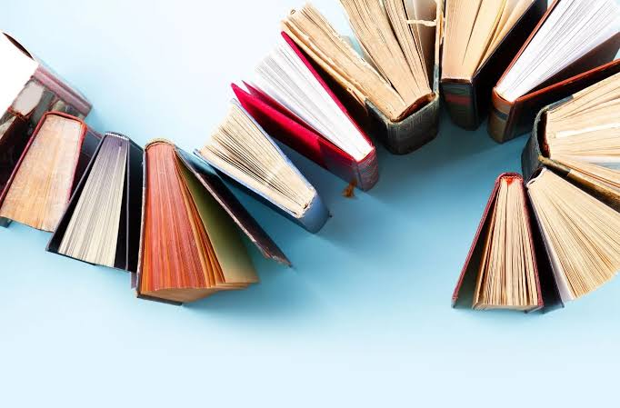

LIVROS

A importância da leitura na atualidade
A leitura é uma ferramenta indispensável para o desenvolvimento humano,
pois amplia o repertório cultural, estimula o pensamento crítico
e enriquece o vocabulário. Mais do que transmitir conhecimento, o hábito de
ler exercita o cérebro, melhora a capacidade de interpretação
e desperta a empatia ao nos conectar com diferentes realidades.
Categorias de leitura
- Romance: histórias de amor, relacionamentos e emoções.
- Fantasia: mundos mágicos, criaturas fantásticas e aventuras.
- Ficção científica: tecnologia, futuro e universos alternativos.
- Suspense e mistério: enigmas, investigações e reviravoltas.
- Terror: histórias sombrias e assustadoras.
- Aventura: jornadas emocionantes e grandes desafios.
- Drama: narrativas marcantes sobre a vida e os sentimentos humanos.
- Biografias: histórias reais de pessoas inspiradoras.
- Autoajuda: livros voltados ao desenvolvimento pessoal.
- Clássicos: obras literárias que marcaram gerações.
- Infantil e juvenil: leituras para crianças e adolescentes.
- Poesia: versos que expressam emoções, ideias e reflexões.
Benefícios da Leitura
A leitura traz diversos benefícios para o desenvolvimento pessoal e
intelectual.Ela ajuda a melhorar o vocabulário,
a escrita e a interpretação de textos. Além disso, estimula a concentração,
a memória e o pensamento crítico.
Ler também desperta a criatividade e amplia a imaginação.Por meio dos livros,
podemos conhecer novas culturas,
ideias e realidades.
A leitura ainda contribui para desenvolver a empatia e compreender melhor as
pessoas.Por isso, ler é um hábito
importante para o aprendizado e o crescimento pessoal.
Como Criar o Hábito da Leitura
Criar o hábito da leitura pode ser mais fácil do que parece.Uma boa dica
é começar com livros sobre assuntos que
despertam seu interesse.
Reservar de 10 a 15 minutos por dia para ler também pode fazer a diferença.Escolher
um lugar tranquilo ajuda a manter
a concentração durante a leitura.
Além disso, estabelecer pequenas metas pode tornar esse hábito mais divertido.É
importante respeitar seu próprio ritmo
e aproveitar cada página lida.Com o tempo, a leitura pode se tornar uma atividade prazerosa
e fazer parte da sua
rotina.
Leitura Digital x Leitura Física
A leitura digital e a leitura física são duas formas de aproveitar o mundo dos livros.
A leitura digital é realizada por meio de celulares, tablets, computadores e leitores digitais,
oferecendo praticidade e acesso a diversas
obras em um único dispositivo. Já a leitura física utiliza livros impressos, proporcionando o contato
direto com as páginas e uma experiência mais tradicional. Enquanto os livros digitais são fáceis de
transportar e podem ocupar menos espaço, os livros físicos permitem apreciar o cheiro, a textura e o visual das
páginas. Ambas as formas contribuem para o aprendizado, a imaginação e o desenvolvimento pessoal. O mais importante
é encontrar o formato que melhor se adapta às suas preferências e manter o hábito da leitura no dia a dia.